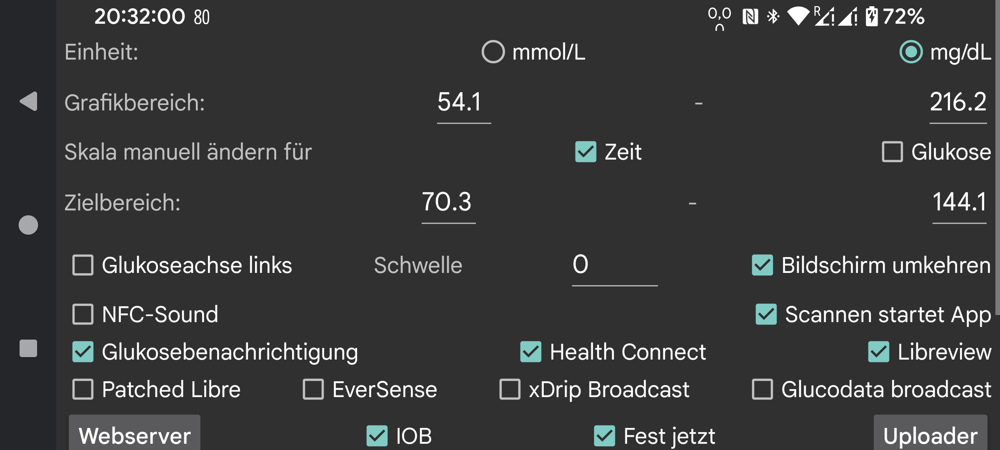

be de es fr it nl pl pt ru tr uk zh en
Wählen Sie, ob die Glukosewerte in mmol/L oder mg/dL angegeben werden sollen.
Erzeugen Sie beim Scannen zusätzlich zur Vibration einen Ton.
Wenn diese Option aktiviert ist, wird diese App gestartet, wenn Sie einen Sensor über NFC scannen, auch wenn diese App nicht angezeigt wird. Wenn mehrere Apps diese Einstellung haben, zeigt Android ein Auswahlmenü an, aus dem Sie die gewünschte App auswählen können. Irgendwie funktioniert die Auswahl einer App nicht und die Auswahl einer App, die beim nächsten Mal ausgewählt werden soll, auch nicht. In diesem Fall können Sie also nicht scannen, ohne dass eine App im Vordergrund ist. Wenn man das in dieser App ausschaltet, kann zumindest eine App auf diese Weise aktiviert werden.
Wenn Sie Root-Zugriff haben, können Sie auch die NFC-Aktivierung von Abbotts Librelink-App deaktivieren (funktioniert nicht mit Libre3).
Werden Sie root in der adb-Shell oder termux und geben Sie ein:
pm disable com.freestylelibre.app.de/com.librelink.app.ui.common.NFCScanActivity
Bei Librelink 2.7.1 und niedriger mussten Sie Folgendes drücken:
pm disable com.freestylelibre.app.de/com.librelink.app.ui.common.ScanSensorActivity
com.freestylelibre.app.de sollte durch die von Ihnen verwendete Version ersetzt werden. So finden Sie den Namen::
pm list package freestylelibre
Danach können Sie Librelink immer noch zum Scannen verwenden, wenn es sich im Vordergrund befindet, aber es wird sonst nicht gestartet. Librelink 2.5.2 - 2.8.2 stürzen selbst ab, wenn sie Root erkennen. Aber in Magisk können Sie Root leicht verstecken, indem Sie Magisk umbenennen und einzelne Anwendungen zur Denyliste (Magisk 24.3) oder Magiskhide (Magisk 23.0) hinzufügen. Sie sollten auch Juggluco zur Denyliste hinzufügen. Außer bei der Verwendung von US Freestyle Libre 2 Sensoren, können Sie auch eine ältere Version von Librelink ohne Root-Check verwenden.
Ohne Root, unter adb shell, können Sie auch die gesamte App deaktivieren:
pm disable-user --user 0 com.freestylelibre.app.de
Bevor Sie den Kundendienst von Abbott anrufen, aktivieren Sie ihn erneut mit:
pm enable com.freestylelibre.app.de
(Früher "Glukose in der Statusleiste von Android" genannt). Wenn die Glukosewerte über Bluetooth gestreamt werden, werden sie in einer Benachrichtigung und in der Android-Statusleiste angezeigt. Auf einigen Smartphones wird der Glukosewert nur in der Android-Statusleiste angezeigt, nachdem man die Benachrichtigungseinstellungen des Androiden geändert hat.
Sie können auch eine Android-Benachrichtigung erhalten, indem Sie im linken mittleren Menü Benachrichtigen auswählen. In diesem Fall wird die Benachrichtigung an einige Smartwatches gesendet, wenn dies so konfiguriert ist. Das funktioniert mit Garmin-Uhren, ich weiß nicht, ob es mit anderen funktioniert. Alarme generieren auch Benachrichtigungen.
Wenn Sie diese einschalten, wird unabhängig davon, welche App im Vordergrund ist, ständig ein kleines Bild mit dem aktuellen Glukosewert auf dem Bildschirm angezeigt. Wenn Sie es das erste Mal einschalten, werden Sie zu einer Liste von Apps weitergeleitet, in denen Sie Juggluco die Erlaubnis geben müssen, über anderen Apps angezeigt zu werden.
Stellen Sie Alarme für hohen und niedrigen Glukosewert, Signalverlustalarm und Benachrichtigung über verfügbaren Wert ein.
Verschiedene Möglichkeiten, Daten von Juggluco an andere Apps oder Server zu senden. (Um Daten an Uhren zu senden, gehen Sie zum linken Menü -> Uhren.)
Legen Sie die für die Mengen verwendeten Bezeichnungen fest. Gehen Sie zum Unterbildschirm, um festzulegen, welche Kennzeichnungen zum Festlegen von Mengen verwendet werden, z. B. Insulindosen, Kohlenhydratverbrauch und Stunden, die Sie mit Fußballspielen verbringen. Wenn Sie auch die Garmin-Uhren-App Kerfstok verwenden, werden diese Etiketten an die Uhren-App gesendet.
Legen Sie fest, dass ein Alarm ausgelöst werden soll, wenn Sie eine bestimmte Menge an Lebensmitteln oder Medikamenten nicht innerhalb einer bestimmten Zeitspanne eingegeben haben.
Wenn aktiviert, scannt Juggluco die Datenmatrix auf Sibionics -Sensorpaketen und Dexcom G7/ONE+-Applikatoren sowie den QR-Code im linken mittleren Menü → Klon mit dem Google-Codescanner. Wenn deaktiviert, wird zXing verwendet. Auf den meisten Geräten funktioniert Google Scan besser, manchmal aber auch nicht. Bei einem Fehler wird zwar immer zXing verwendet, manchmal funktioniert Google Scan aber einfach nicht, ohne einen Fehler zurückzugeben.
Alle Arten von Einstellungen, die sich darauf beziehen, wie Daten angezeigt werden, vom Zielbereich bis zur Sprache.